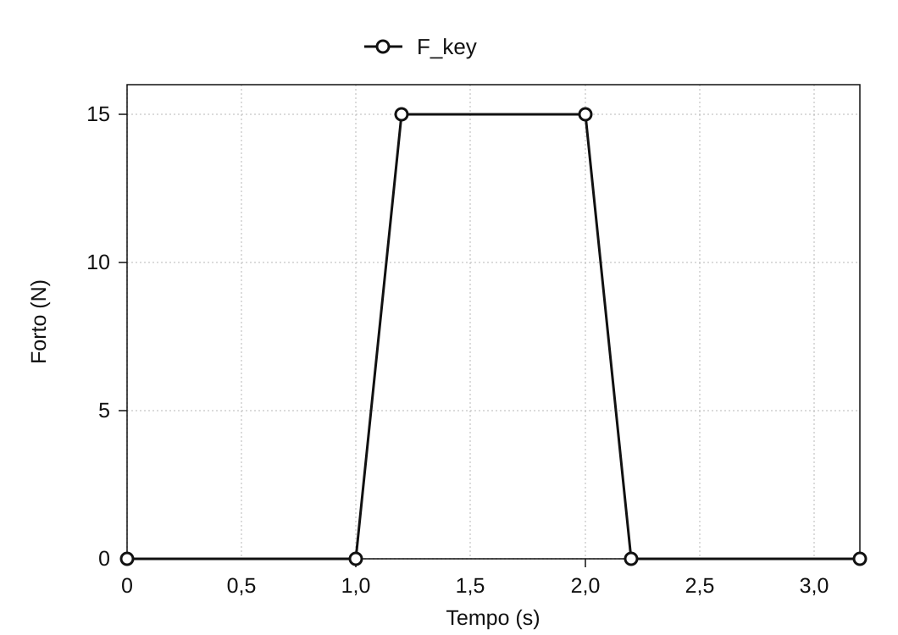
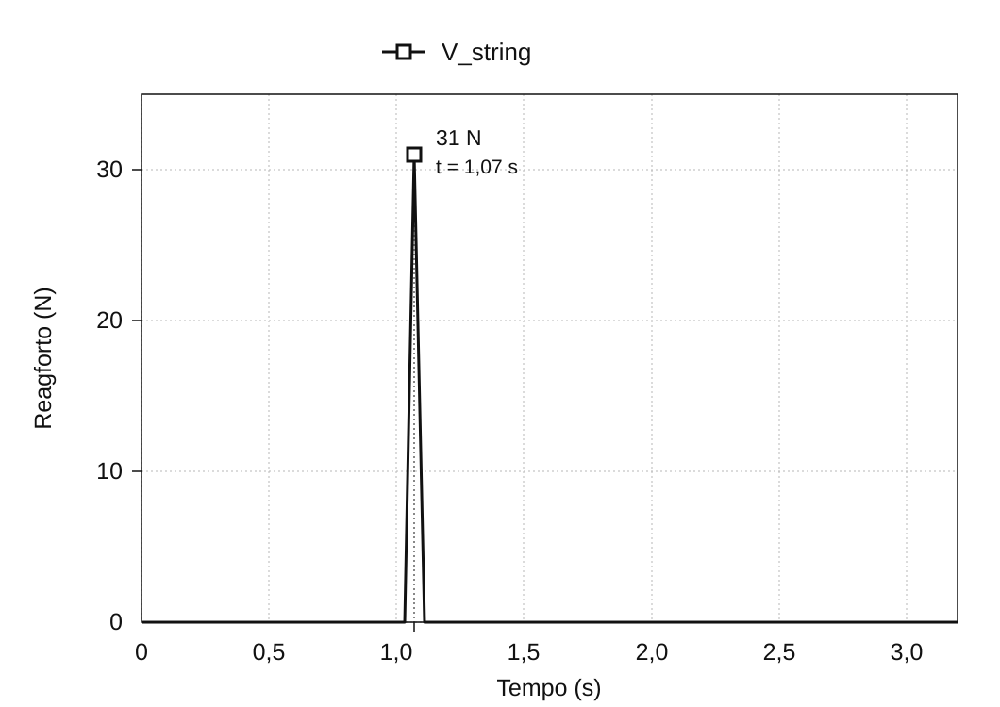

Movanalizo de la piana agmekanismo
januaro 2020
Superrigardo
La agmekanismo de vostpiano estas la levilaro, kiu transdonas klavopremon al martelo; la martelo leviĝas, frapas kordon kaj vibrigas ĝin. Ĉi tiu projekto rekonstruis la agmekanismon kiel 3D-modelon en SolidWorks* kaj uzis movanalizon por ekzameni, kiel enigo ĉe la klavo transformiĝas en martelan rapidon kaj reagforton ĉe la kordo.
Por la analizo, la klava mekanismo estis modeligita en 3D de nulo surbaze de referencaj bildoj, kaj sur tiu modelo estis faritaj du movanalizoj: unu pri la rilato inter la rapido de la malsupreniranta klavo kaj tiu de la supreniranta martelo, alia pri la rilato inter la forto aplikata al la klavo kaj la reagforto ĉe la kordo. La valorojn el la simulado oni kontrolis kontraŭ teoriaj valoroj derivitaj el la dimensioj kaj la pozicioj de la turnopunktoj, por konstati, kiel movo kaj forto transiras ene de la modelo.
* SolidWorks estas 3D-CAD-sistemo kun iloj por struktura analizo de partoj kaj movanalizo de mekanismoj.


De la piana agmekanismo al modelo analizebla
Kiel klavopremo igas la martelon frapi
La piana agmekanismo estas la mekanismo, kiu konvertas la malsupran movon de klavo al la supra movo de martelo. Premi la klavon ekmovas kune la partojn nomatajn «capstan», «wippen» kaj «jack», kaj la ripetlevilon, kaj la martelo leviĝas ĝis ĝi frapas la kordon. Kion la ludanto vidas, estas unu sola klavopremo; interne pluraj pecoj turniĝas ĉirkaŭ malsamaj turnopunktoj kaj transdonas la movon unu al la alia tuŝante.
La 3D-modelo inkluzivas la klavon, la martelon, la parton «jack», la parton «wippen», la ripetlevilon, la parton «capstan», la mutigilon, la mutigilan levilon kaj la draton, kune kun la kadro kiu portas ilin. Kompreni la movon postulis pli ol rigardi la finitan formon: necesis difini, kiu peco turniĝas ĉirkaŭ kiu turnopunkto kaj kie ĝi tuŝas la sekvan.
Konstrui 3D-modelon el sekca desegno
Anstataŭ uzi pretajn CAD-datumojn, la konturo de ĉiu peco estis transskribita super sekca referenco de la piana agmekanismo kaj modeligita en 3D unu post la alia. Poste la pecoj estis kunigitaj en kunmetaĵon, kun la fiksaj kaj turnaj rilatoj de la reala mekanismo starigitaj inter ili. Tiu paŝo transformis modelon por rigardi formon en modelon, al kiu oni povas apliki forton kaj kiun oni povas movi.


Kontroli la gradojn de libereco de la kunmetaĵo
Ekskludante la fiksan kadron, moveblaj estas naŭ pecoj, kio sen limigoj donas entute 54 gradojn de libereco. Fiksi la parton «capstan» kaj la draton al aliaj pecoj forprenas 12, kaj limigi la restajn sep pecojn per turnaj artikoj forprenas pliajn 35. Tial ĉi tiu CAD-kunmetaĵo havas 7 gradojn de libereco, jene.
54 − 12 − 35 = 7
Ankaŭ la limig-diagnozo de SolidWorks montris la samon: taksitaj kaj efektivaj gradoj de libereco po 7, redundaj limigoj 0. Tio ne estas cifero, kiu decidas pri la gradoj de libereco de pianaj agmekanismoj ĝenerale — ĝi konfirmas, ke la aro da pecoj kaj la limigoj difinitaj en ĉi tiu projekto estas kunmetitaj kiel intencite.

Du analizoj — kiel la klava enigo konvertiĝas
La konduton de la modelo oni esploris en du apartaj analizoj. Analizo 1 demandas, kiel la rapido, per kiu la klavo moviĝas, konvertiĝas al la rapido de la martelo; analizo 2, kiel la forto aplikata al la klavo aperas kiel reagforto ĉe la korda flanko. Elprenante po unu paron de enigo kaj eligo, la konduto de komplika levilaro iĝas klarigebla per geometria proporcio de rapidoj kaj per la ekvilibro de fortoj sur levilo.
Kiel bazon de komparo oni uzis teorian kalkulon, en kiu la mekanismo estas anstataŭigita per simplaj turniĝantaj elementoj. Se la teoria kaj la simulita valoroj estas proksimaj, oni povas konkludi, ke almenaŭ la movo ene de la modelo sekvas la rilaton atendeblan el la starigitaj dimensioj kaj limigoj.

Analizo 1 — kiom la rapido de la klavo pligrandiĝas ĉe la martelo
Por la analizo de rapidoj, la komplika piana agmekanismo estis simpligita al tri rigidaj korpoj, kiuj transdonas la movon tuŝante: la klavo, la meza mekanismo centrita sur la parto «wippen», kaj la martelo. Legante la movon kiel transirantan sinsekve de ① al ③ en la figuro, mekanismon el multaj pecoj eblas kalkuli kiel tri ŝtupojn de turniĝo.

Ĉiuj punktoj de rigida korpo havas la saman angulan rapidon. Se r estas la distanco de la turnopunkto kaj v la linia rapido ĉe tiu punkto, tiam v = ωr. Supozante, ke rapido transiras inter korpoj senperde ĉe ĉiu tuŝpunkto, oni povas kalkuli la martelan rapidon per multiplikado de la rilatumoj inter la eliga kaj eniga radiusoj tra la tri ŝtupoj, poste multiplikante tiun produkton per la klava rapido.
vhammer = (r1′ r2′ r3′ / r1 r2 r3) vkey

Enigaj kondiĉoj kaj observitaj rezultoj
En SolidWorks Motion Analysis oni aplikis 5 N malsupren ĉe la fino de la klavo kaj observis la liniajn rapidojn de la klavofino kaj de la martelo. Tuj post la komenco de la forto, la pintaj rapidoj estis 1027 mm/s ĉe la klavo kaj 4284 mm/s ĉe la martelo. En la simulado, do, la martelo moviĝis proksimume 4,17-oble pli rapide ol la klavo.

| Grando kaj metodo | Rapido |
|---|---|
| Klavo (simulado) | 1027 mm/s |
| Martelo (teoria kalkulo) | 4614 mm/s |
| Martelo (simulado) | 4284 mm/s |
Komparo kun la teoria valoro
La radiusoj mezuritaj sur la modelo estas r1 = 200 mm, r1′ = 88 mm, r2 = 53 mm, r2′ = 78 mm, r3 = 16 mm kaj r3′ = 111 mm. Enmetante ilin en la formulon, la idealigita proporcio de rapidoj estas ĉirkaŭ 4,49, kio antaŭvidas martelan rapidon de 4614 mm/s kontraŭ klava rapido de 1027 mm/s.

La simulita martela rapido de 4284 mm/s estis ĉirkaŭ 7 % sub la teoria valoro, montrante similan gradon de rapidopligrandigo. La teoria kalkulo uzas tri idealigitajn rigidajn korpojn, dum la simulado reprezentas la unuopajn partojn. La nombra diferenco sola ne establas ĝian kaŭzon.
Analizo 2 — kiel la forto ĉe la klavo aperas ĉe la kordo
La dua analizo aplikis 15 N malsupren sur la supraĵon de la klavo kaj observis la reagforton aperantan ĉe la korda flanko en la momento de la frapo. La enigo ĉe la klava flanko, Fkey, kreskis ekde 1,0 sekundo ĝis 15 N, kaj en la momento de la frapo la reagforto Vstring montris pinton de 31 N.


Por komparo oni faris simpligitan kalkulon pri levilekvilibro, uzante la braklongojn ĉe la klava kaj martela flankoj.
Vstring = (15 × 195) / 94 = 31.1 N
Uzi braklongojn de 195 mm ĉe la eniga flanko kaj 94 mm ĉe la korda flanko donas komparvaloron de 31,1 N laŭ statika levilekvilibro. Tio estas 0,1 N super la simulita pinto de 31 N. Ankoraŭ necesas konfirmi, en kiuj kondiĉoj tiu statika kalkulo aplikeblas al la momenta reagforta pinto ĉe frapo.

Kontrolo de la simulado kontraŭ la teoriaj valoroj
Rezultoj de la du komparoj
En analizo 1 la teoria martela rapido estis 4614 mm/s, kompare kun 4284 mm/s en la simulado. En analizo 2 la komparvaloro laŭ statika levilekvilibro estis 31,1 N, kompare kun simulita pinto de 31 N. Ambaŭ komparoj montris proksiman kongruon inter la 3D-modelo kaj la teoriaj kalkuloj.
Interpreti la diferencojn
La teoria kalkulo reduktas la agmekanismon al tri rigidaj korpoj kaj supozas, ke movo kaj forto transiras tra iliaj tuŝpunktoj senperde. La simulado reprezentas la unuopajn komponantojn. Tiuj malsamaj reprezentadoj gravas por interpreti la rezultojn, sed atribui la restantan diferencon al energiperdo aŭ materiala deformiĝo postulas konfirmon de la simulagordoj.
Konkludo
La 3D-simulado proksime kongruis kun la teoriaj komparoj pri martela rapido kaj reagforto ĉe la kordo. Ene de tiuj komparoj, la modelo konstruita el sekca desegno reproduktis la transdonon de movo kaj forto atendatan laŭ la difinitaj geometrio kaj limigoj.
En ĉi tiu projekto temis ne nur pri reprodukti formon. Legi la strukturon el sekca referenco, traduki la rilatojn inter la pecoj en limigojn ene de la CAD, kaj simpligi la rezulton al mekanika modelo taŭga por la starigita demando — ĉio ĉi apartenis al unu sama procezo de modeligado.